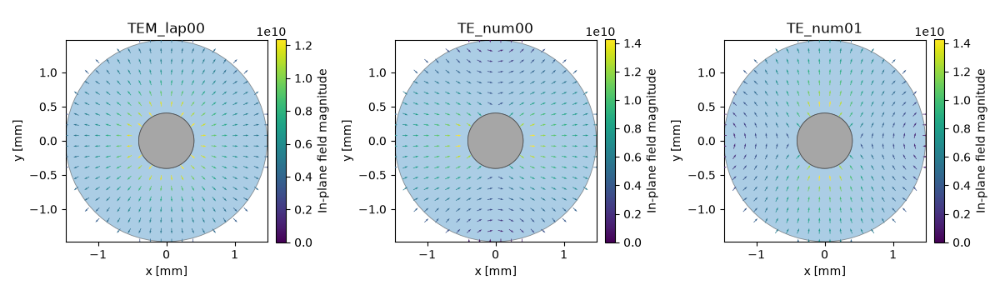
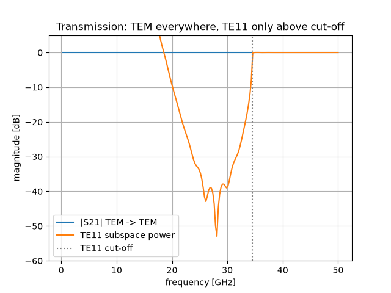
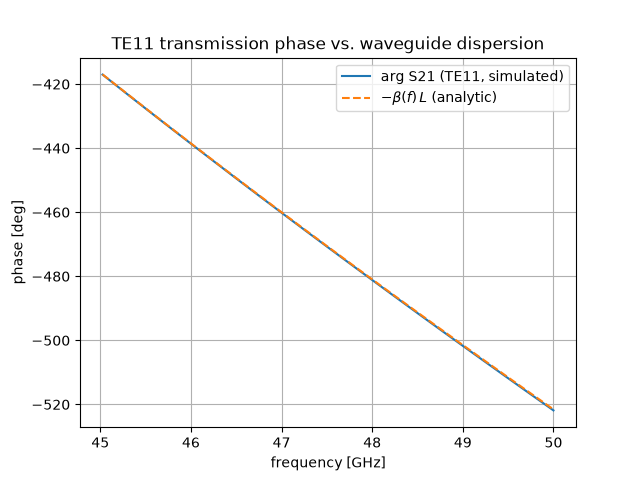

Note
Go to the end to download the full example code.
Higher-order modes#
Every tutorial so far stayed safely below the first higher-order cut-off, so “the” mode of the line was unambiguous. This one takes the familiar RG-58 class coax and raises the band edge to 50 GHz — past the cut-off of the TE11 mode pair near 34 GHz. Above that frequency the line carries three modes at once, and the S-matrix gains a mode index on top of the port index. The page walks through the mode ladder, the degenerate TE11 pair, mode-resolved S-parameters, and two analytical anchors: the TE11 cut-off and the waveguide dispersion of its transmission phase.
The problem#
A coaxial line is single-mode only below the cut-off of its first waveguide-type mode, TE11 — with one azimuthal period around the annulus. A handy estimate places that cut-off where the mean circumference equals one guided wavelength,
about 33.8 GHz for our RG-58 cross-section. On the ideal circular line TE11 comes as an exactly degenerate pair — two orthogonal polarisations at the same cut-off. Everything below is therefore a three-mode problem over the 50 GHz band: TEM plus the two TE11 polarisations.
import matplotlib.pyplot as plt
import numpy as np
import magnelio as mio
from magnelio import geo, ports
from magnelio.constants import *
r_i = 0.405e-3 # inner conductor radius [m]
r_o = 1.475e-3 # shield radius [m]
eps_r = 2.25 # polyethylene
L = 8e-3 # line length [m]
f_max = 50e9 # band edge, well above the TE11 cut-off
f_c_estimate = C0 / (np.pi * (r_i + r_o) * np.sqrt(eps_r))
print(f"TE11 cut-off estimate: {f_c_estimate / 1e9:.2f} GHz")
TE11 cut-off estimate: 33.84 GHz
Geometry and multi-mode ports#
The geometry is the uniform coax from the earlier tutorials. The
port declaration changes in one place: n_modes=3. The generic
PortWaveguide solves the three lowest modes
of the cross-section, whatever their type — here the TEM line mode
and the two TE11 polarisations, sorted by cut-off. (The analytical
coax port of tutorial 2 stays single-mode: its closed form covers
only TEM.)
pec = mio.Material.pec()
pe = mio.Material.from_isotropic(name="polyethylene", epsilon=eps_r)
model = mio.GeometryModel(background=pec)
inner = geo.Cylinder(origin=(0, 0, 0), radius=r_i, height=L, axis="z", material=pec)
outer = geo.Cylinder(origin=(0, 0, 0), radius=r_o, height=L, axis="z", material=pe)
model.add(geo.Difference(outer, inner))
model.add(inner)
model.add_port(ports.PortWaveguide(name="port1", plane="zmin", n_modes=3))
model.add_port(ports.PortWaveguide(name="port2", plane="zmax", n_modes=3))
mesh = mio.Mesh.from_geometry(model, mio.MeshControl(max_cell_size=0.15e-3), f_max=f_max)
print(f"grid: {mesh.Nx} x {mesh.Ny} x {mesh.Nz} cells")
grid: 22 x 22 x 54 cells
The mode ladder#
analysis = mio.AnalysisScatteringTD(mesh=mesh, f_max=f_max, verbose=False)
report = analysis.solve_ports()["port1"]
print(report)
UserWarning: Modal port 'port1': modes 'TE_num00' (fc = 34.5063 GHz) and 'TE_num01' (fc = 34.5067 GHz) are degenerate within 0.001% relative cut-off difference. Their power-flux inner product is not orthogonal under degeneracy, so non-trivial cross-coupling at the modal port is expected and does not vanish with mesh refinement. Either restrict the operating band so the degenerate pair stays evanescent, or break the underlying symmetry of the cross-section (e.g. by inhomogeneous filling or by choosing a non-rectangular geometry).
UserWarning: Modal port 'port2': modes 'TE_num00' (fc = 34.5063 GHz) and 'TE_num01' (fc = 34.5067 GHz) are degenerate within 0.001% relative cut-off difference. Their power-flux inner product is not orthogonal under degeneracy, so non-trivial cross-coupling at the modal port is expected and does not vanish with mesh refinement. Either restrict the operating band so the degenerate pair stays evanescent, or break the underlying symmetry of the cross-section (e.g. by inhomogeneous filling or by choosing a non-rectangular geometry).
Port 'port1' — 3 mode(s)
z_line = 51.04 Ω (numerical)
f_cutoff = 34.5063 GHz (numerical)
[0] TEM_lap00 TEM f_c = 0.0000 GHz z_line = 51.04 Ω
[1] TE_num00 TE f_c = 34.5063 GHz
[2] TE_num01 TE f_c = 34.5067 GHz
The report lists the ladder: TEM at \(f_c = 0\), then the TE11 pair — at the same cut-off up to a 0.001 % split from the staircased circle, about 2 % above the mean-circumference estimate. Solving the ports also prints a degeneracy warning, and it is worth reading: within a degenerate pair, which two orthogonal polarisations the solver picks is arbitrary — each port makes its own deterministic but independent choice. We will see the consequence in the S-matrix below. (If your device needs one specific polarisation, the warning also tells you the way out: restrict the band, or break the symmetry of the cross-section.)
The transverse profiles make the ladder concrete — the radial TEM field, and the two TE11 polarisations (geometry=model overlays the conductor cross-section on each):
fig, axes = plt.subplots(1, 3, figsize=(12, 3.6))
for m, ax in enumerate(axes):
report.modes[m].plot(field="E", ax=ax, title=report.modes[m].name, geometry=model)
fig.tight_layout()

Mode-resolved S-parameters#
Excitations are (port, mode) pairs now. We launch the TEM mode
and one TE11 polarisation; each entry is one time-domain run:
result = analysis.run(excited=[("port1", 0), ("port1", 1)])
S-parameter lookups gain the same mode indices,
result.S(out_port, in_port, mode_out=..., mode_in=...). First
the transmission magnitudes — TEM crosses the whole band, TE11 only
exists above its cut-off:
f = result.f_axis
f_c = report.modes[1].f_cutoff
s21_tem = result.db("port2", "port1", mode_out=0, mode_in=0)
# TE11 arrives distributed over the pair; sum the subspace power:
p21_te11 = sum(np.abs(result.S("port2", "port1", mode_out=k, mode_in=1)) ** 2 for k in (1, 2))
fig, ax = plt.subplots()
ax.plot(f / 1e9, s21_tem, label="|S21| TEM -> TEM")
ax.plot(f / 1e9, 10 * np.log10(np.maximum(p21_te11, 1e-20)), label="TE11 subspace power")
ax.axvline(f_c / 1e9, color="gray", ls=":", label="TE11 cut-off")
ax.set_xlabel("frequency [GHz]")
ax.set_ylabel("magnitude [dB]")
ax.set_ylim(-60, 5)
ax.set_title("Transmission: TEM everywhere, TE11 only above cut-off")
ax.grid(True)
ax.legend()

<matplotlib.legend.Legend object at 0x7f4a81f841d0>
Below its cut-off the TE11 wave is evanescent — nothing arrives at port 2 and the curve falls off the plot; above cut-off it transmits fully. Why “subspace power” instead of a single \(S_{21}\) entry? Look at the degenerate 2x2 block at 45 GHz:
|S21| block (TE11_a excited -> [TE11_a, TE11_b] received): [[0. 1.]]
Port 2 reports the transmitted wave in its own TE11 basis — and here it happens to label the pair in swapped order, so the power arrives in the “other” polarisation channel. That is bookkeeping, not physics: within a degenerate subspace only basis-invariant statements are meaningful, and the invariant here — total subspace power — is 1. Genuine mode conversion, by contrast, is between non-degenerate modes, and on this uniform line it is absent:
band = f >= 1.2 * f_c
conv = 20 * np.log10(np.abs(result.S("port2", "port1", mode_out=0, mode_in=1)[band])).max()
print(f"worst TE11 -> TEM conversion above cut-off: {conv:6.1f} dB")
p11 = sum(np.abs(result.S("port1", "port1", mode_out=k, mode_in=1)[band]) ** 2 for k in range(3))
p21 = sum(np.abs(result.S("port2", "port1", mode_out=k, mode_in=1)[band]) ** 2 for k in range(3))
print(f"TE11 power balance: min sum |S|^2 = {(p11 + p21).min():.4f}")
worst TE11 -> TEM conversion above cut-off: -171.6 dB
TE11 power balance: min sum |S|^2 = 0.9997
The dispersion anchor#
A waveguide mode above cut-off propagates with
so unlike the TEM phase of the earlier tutorials, the TE11 transmission phase must curve — steep near cut-off, approaching the TEM slope far above.
What is being compared here is that curvature, not the absolute phase. The absolute value is not the simulation’s to state: a mode field is an eigenvector, and an eigenvector’s sign is whatever the solver’s normalisation makes it. Flipping the sign of the mode at one port turns every \(S\) entry involving it by 180° while changing nothing measurable, which is why the alignment below works in steps of \(\pi\) rather than \(2\pi\). Using the report’s cut-off in the formula:
mo_dom = 1 if block[0, 0] >= block[0, 1] else 2
s21_te11 = result.S("port2", "port1", mode_out=mo_dom, mode_in=1)
bandp = f >= 1.3 * f_c
beta = 2 * np.pi * np.sqrt(eps_r) / C0 * np.sqrt(f[bandp] ** 2 - f_c**2)
phase_sim = np.unwrap(np.angle(s21_te11[bandp]))
# align on multiples of pi -- see the discussion above
phase_sim -= np.pi * np.round((phase_sim[0] + beta[0] * L) / np.pi)
fig, ax = plt.subplots()
ax.plot(f[bandp] / 1e9, np.degrees(phase_sim), label="arg S21 (TE11, simulated)")
ax.plot(f[bandp] / 1e9, np.degrees(-beta * L), "--", label=r"$-\beta(f)\,L$ (analytic)")
ax.set_xlabel("frequency [GHz]")
ax.set_ylabel("phase [deg]")
ax.set_title("TE11 transmission phase vs. waveguide dispersion")
ax.grid(True)
ax.legend()
print(f"max phase deviation: {np.degrees(np.abs(phase_sim + beta * L)).max():.2f} deg")

max phase deviation: 0.31 deg
Where to go next#
New in this tutorial: multi-mode ports (n_modes), the mode
ladder and its report, mode indices in every S-parameter lookup,
degenerate pairs and what is (and is not) invariant about them, and
the waveguide dispersion as an analytical anchor. The next tutorial
leaves driven problems altogether and computes the eigenmodes of a
closed cavity.
Total running time of the script: (0 minutes 14.717 seconds)